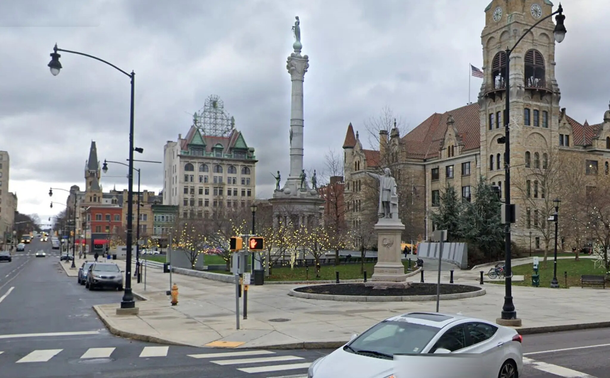
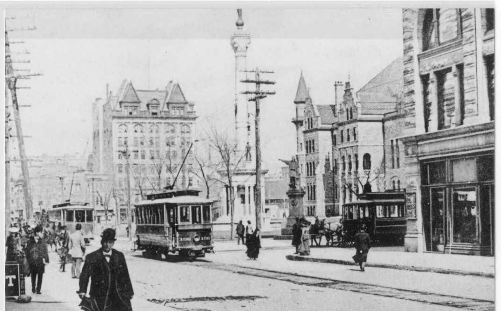

Scranton, Pennsylvania · Then & Now
Courthouse
Square
Trolleys and pedestrians working their way around the Square. The Soldiers and Sailors Memorial, dedicated in 1900, was still new here, and the Board of Trade building across the Square had yet to carry the city’s first illuminated sign. The column has not moved. Almost nothing else in the frame stayed put.


Drag to compare · arrow keys to scrub
ThenPhotograph, Spruce Street at North Washington Avenue, around 1905.
NowGoogle Street View, captured November 2022. Imagery © Google.
On the fitAnchored on the memorial column, the one thing standing in both frames. The historical scan is only 1071 px wide and is enlarged about 1.9× here, so it reads softer than the rest of the series.